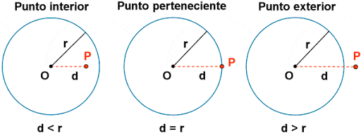
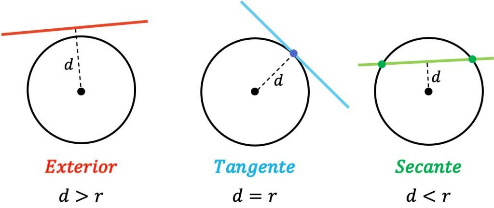
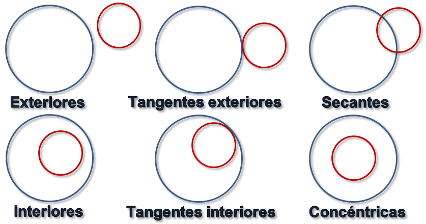

Tema 5
Cónicas
Cónicas
Se denomina sección cónica (o simplemente cónica) a todas las curvas resultantes de las diferentes intersecciones entre un cono y un plano.

Dependiendo del grado de inclinación del plano y del ángulo del cono, tenemos:
- Circunferencia
- Elipse
- Parábola
- Hipérbola
Lugares geométricos
Es un conjunto de puntos que cumplen una serie de propiedades.
Podemos ver las cónicas como lugares geométricos
Circunferencia
Lugar geométrico de los puntos que equidistan de un punto fijo llamado centro. A la distancia constante se la denomina radio.
1Calcula la ecuación de la circunferencia en cada caso:
- Su centro y radio son \[C(-3,2)\] y \[r = 7\]
- Su centro y radio son \[C(1,2)\] y \[r = 1\]
- Pasa por los puntos \[P(0,0)]\], \[Q(3,6)\] y \[R(10,3)\]
- Pasa por los puntos \[P(3,2)\] y \[B(1,-2)\] y tiene su centro en la recta \[r \equiv 3x -y = 6\].
- Pasa por el punto \[A(3,4)\], su radio vale \[r=4\] yn su centro se encuentra en el eje de las x's.
2Calcula el centro y radio de las siguientes circunferencias:
- \[x^2+y^2 -8x -2y = -13\]
- \[16x^2 + 16y^2 -16x -32y = -11 \]
- \[4x^2 + 4y^2 -12y = -5\]
Posición relativa de un punto y una circunferencia
Posición relativa de un punto y una recta
Posición relativa de dos circunferencias
3Calcula la posición relativa de los siguientes pares de objectos geométricos:
- La circunferencia \[x^2+2x+y^2-4y=4\] y el punto \[P(3,2)\]
- La circunferencia \[x^2-4x+y^2 - 6y +12 = 0\] y la recta \[ 3x - 4y + 1 = 0\]
- La circunferencia \[x^2 -2x + y^2 -8y +16 = 0\] y la circunferencia \[x^2 + 8x + y^2 - 2y + 13=0\]
Elipse
Lugar geométrico de los puntos del plano cuya suma de distancias a dos puntos fijos llamados focos es contante.
Elipse

4Calcula la ecuación de la elipse a partir de los siguientes datos:
- Focos en los puntos \[F'(-3,0)\] y \[F(3,0)\] y vértices dos vértices \[A(6,0)\] y \[A'(-6,0)\]
Hipérbola
Es el lugar geométrico de los puntos de un plano, tales que el valor absoluto de la diferencia de sus distancias a dos puntos fijos, llamados focos, es igual a la distancia entre los vértices, la cual es una constante positiva.
Parábola
Es el lugar geométrico de los puntos de un plano que equidistan de una recta llamada directriz, y un punto interior a la parábola llamado foco